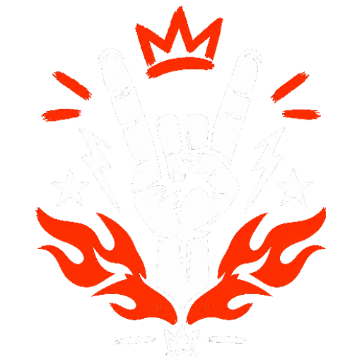

Antes de que preguntes
Todo lo que la gente nos pregunta sobre ModoParche, en un solo lugar.
¿Qué es un parche?
Es un plan en grupo: una cata de café, una caminata, una trivia, un partido o una rumba. Alguien lo abre, define lugar, hora y cupos, y los demás se suman. Llegas solo y sales acompañado.
¿Cuánto cuesta usar ModoParche?
Para personas es gratis. Crear tu cuenta, ver el radar, abrir parches y sumarte no cuesta nada. Lo único que pagas es lo que consumas en el plan, y eso siempre se muestra antes de unirte.
¿Cómo encuentro los planes que van conmigo?
En tu radar filtras por categoría y fecha, buscas por nombre o lugar y ves la distancia de cada plan. Tus gustos se editan en tu perfil.
¿Puedo abrir mi propio parche?
Sí. Con tu cuenta tocas «Abrir un parche», eliges qué van a hacer, dónde, a qué hora y cuántos cupos hay. Aparece en el radar de la gente con tu misma vibra y ves en vivo quién se suma.
¿En qué ciudades funciona?
Arrancamos en Villavicencio, porque es donde vivimos. También puedes registrarte desde Acacías y Restrepo. Iremos sumando más ciudades del Meta.
¿Qué pasa si llueve?
Quien organiza puede dejar un Plan B bajo techo. Si lo activa, a todos los del parche les llega el aviso con el nuevo lugar, a la misma hora.
¿Qué son las insignias?
Son medallas que ganas al usar la app: armar tu primer parche, unirte a 3, hacer check-in al llegar, recibir 3 buenas calificaciones (4,5 o más) o caerle a planes de rumba, comida, deporte o miradores. Una vez ganadas no se pierden y se ven en tu perfil.
¿Por qué no veo el lugar exacto sin cuenta?
Por seguridad. El lugar exacto, los cupos y quién va solo los ven personas con cuenta. Así nadie anónimo sabe dónde está reunido un grupo.
¿Quién ve mis datos?
Los demás solo ven tu nombre corto, tu avatar o foto y tu reputación. Tu cédula, teléfono y fecha de nacimiento son privados: solo los ves tú.
¿Me puedo salir de un parche?
Sí, cuando quieras, desde «Mis parches». Tu cupo se libera para otra persona. Solo te pedimos avisar en el chat del grupo: salirse a última hora sin decir nada baja tu reputación.
¿Cómo creo la cuenta de mi negocio?
Tú mismo, en tres pasos y sin esperar a nadie: datos del negocio, datos de acceso y el plan que quieres. Hazlo en Crear cuenta de negocio. Es una cuenta aparte de la personal, con su propio correo.
¿Cuánto cuesta para negocios?
No hay mensualidades: solo pagas si llegan clientes. Parche básico es gratis (2 parches al mes, 0% de comisión y $0 por cliente). Parche Villavo cobra 10% por cada paquete redimido (combos, boletas, covers) o $2.500 por cliente que llega en consumo libre en mesa, con parches ilimitados. Varias sedes baja la tarifa a 8% o $2.000. Si alguien reserva y no llega, no pagas. Mira el detalle en Para negocios.
¿Otros negocios ven mis datos?
No. Cada negocio tiene su propia cuenta y su propio panel. Tus parches, cupones, asistentes y métricas solo los ves tú.
¿Puedo subir fotos de mis parches?
Sí. Al crear un parche desde tu panel le subes una foto. Esa imagen aparece en la tarjeta del parche en el radar de los usuarios, con el sello de aliado, para que llame más la atención.

No encontramos esa pregunta
Prueba con otra palabra o escríbenos directo.